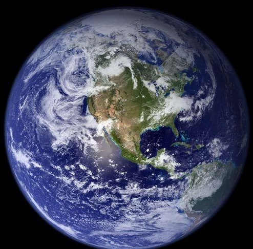

EARTH
Humans evolved on Earth
Our home planet is the perfect environment for us, alive or dead. On Earth, human remains eventually decompose as the environment recycles the body’s biomass, the organic material that makes us up. “Certain organisms basically have evolved to exploit the biomass of dead organisms. That’s just their thing, their niche,” says Nicholas Passalacqua, program director of the forensic anthropology program at Western Carolina University in Cullowhee, North Carolina.
Here’s what (basically) happens when a person dies and decomposes, according to Melissa Connor, a professor of forensic anthropology at Colorado Mesa University in Grand Junction, Colorado. Early on, the body cools (algor mortis) and the blood begins to pool due to gravity (livor mortis). Rigor mortis, or temporary stiffening of the muscles, sets in. Then, cells begin to break down as the body’s own enzymes destroy them — a process called autolysis.
Then putrefaction occurs, as the bacteria that help us digest our food keep right on trucking along. It’s autolysis and putrefaction that cause things like discoloration and other skin changes, as well as bloating. Scavengers (such as insects, birds, or other animals) and later fungi also move in, taking care of the rest of the cleanup. Connor does note that “decomposition is a continuum in which these processes may overlap,” so this isn’t necessarily a strict step-by-step process.

On Earth, the main factor that affects decomposition is temperature, Passalacqua says. “Temperature is really an important factor for the things that metabolize — that eat — human tissues,” he says. “So when you think about insects as a primary kind of scavenger of human soft tissues, insect activity is really temperature dependent.”
Temperature is a factor for another reason as well. “Sublimation occurs in freezing environments — the frozen water escapes to gas without going through the liquid form,” Connor says, the same way wet clothes can still dry hanging outside in the winter. So, in freezing Earth environments where water sublimates and the cold stops processes such as autolysis, “sublimation desiccates remains and creates mummies,” she says.
The martian environment
Although Mars may have looked more like Earth in the past, today it is a cold, dry planet with an exceedingly thin atmosphere composed of 95 percent carbon dioxide and only 0.16 percent oxygen.
Here’s what (basically) happens when a person dies and decomposes, according to Melissa Connor, a professor of forensic anthropology at Colorado Mesa University in Grand Junction, Colorado. Early on, the body cools (algor mortis) and the blood begins to pool due to gravity (livor mortis). Rigor mortis, or temporary stiffening of the muscles, sets in. Then, cells begin to break down as the body’s own enzymes destroy them — a process called autolysis.